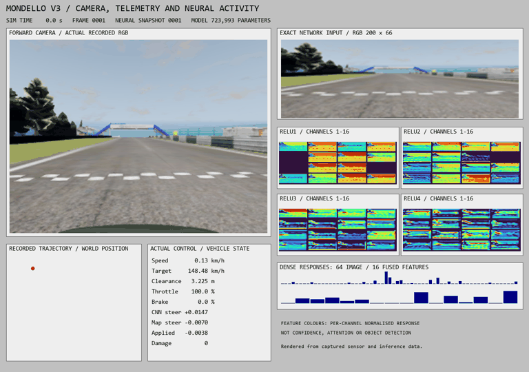
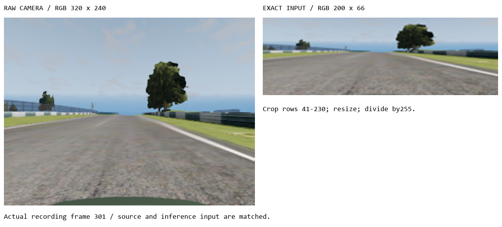
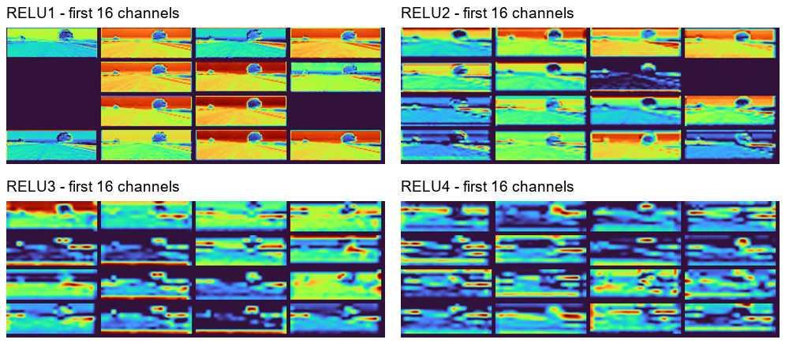
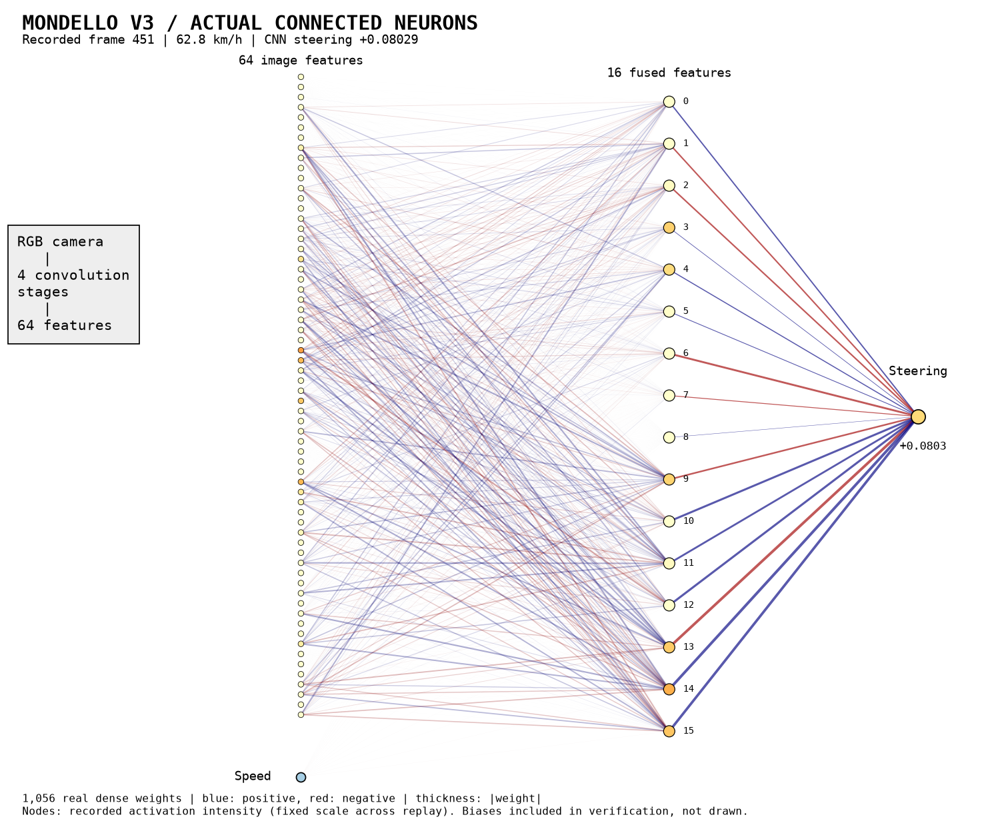
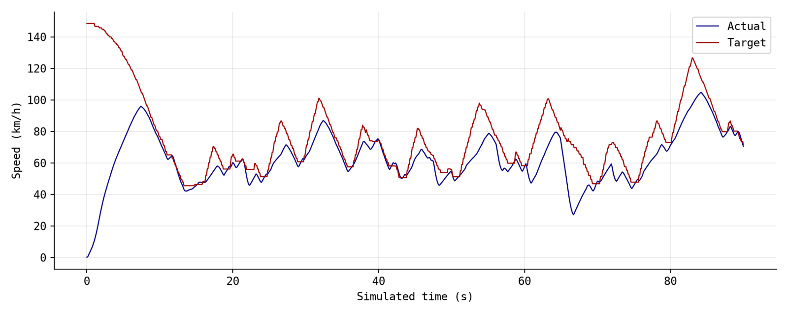

Objective
I wanted to take a neural network beyond an offline prediction and connect it to a moving vehicle. I used an ETK800 on Mondello Park in BeamNG.tech, with MATLAB handling network training and inference, and Python handling simulator communication, vehicle control and logging.
Read the full technical report (PDF) · Open the interactive neural replay
Recorded results
- Peak speed
- 104.79 km/h
- Distance
- 1,550.6 m
- Duration
- 90 simulated seconds
- Reported damage
- 0
The latest recorded section completed all 900 control actions and saved 90 neural activation snapshots. Repeatability was also demonstrated in an earlier release, which completed three full laps with zero damage and a mean simulated lap time of 193.9 seconds. These are separate test configurations.

Training and control
I collected driving demonstrations and iterated through imitation learning, correction data and recovery training. The loaded network has 723,993 learnable parameters. Four convolutional stages extract image features from a 66 × 200 RGB camera crop. Those features are combined with vehicle speed to predict steering.
The integrated controller combines a geometric reference path with a bounded neural steering correction. Python captures the camera and vehicle state, MATLAB returns a prediction, and the controller applies steering, throttle and braking before advancing the simulation by 0.10 seconds. This gives a repeatable 10 Hz control loop in simulated time.

Seeing the network respond
I exported intermediate MATLAB activations so I could inspect the four convolutional stages alongside the camera input. The replay also shows the actual learned connections in the dense prediction head: 64 image features and one speed input feed 16 fused features and a steering output.


Play the interactive replay to move through all 90 snapshots or filter to the strongest connections. Reconstructing the dense head from its extracted weights reproduced the recorded steering outputs with a maximum absolute difference of 3.4 × 10−8.
Engineering development
I reconstructed a reference line from recorded human position data, smoothed it and repaired sections that crossed the track envelope. I then adjusted tracking lookahead, speed planning and brake response through simulator tests. Each run retained its settings, camera frames and numerical traces for comparison.
Profiling showed that camera capture and simulator stepping dominated execution time. Changing the deterministic rendering schedule reduced wall time for a matched 60-second test from 136.95 to 97.91 seconds, a 28.5% reduction in that comparison.

Technical record
The full report covers the architecture, training-data provenance, network structure, control integration, test results and numerical checks. The recorded run demonstrates the combined controller on a timed section; the earlier three-lap result provides separate evidence of repeatable lap completion.
Download the technical report. The report was written with AI assistance to consolidate the code and experimental records.